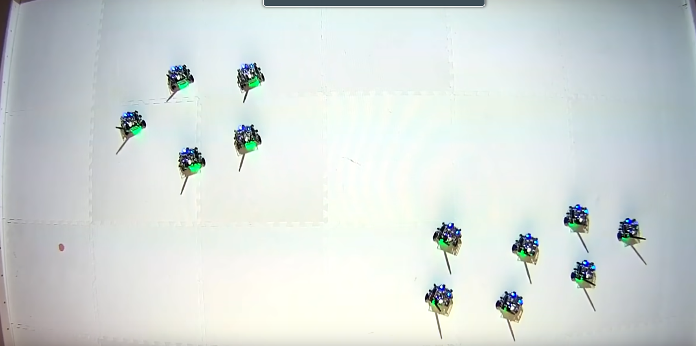

ZZ1 PROJET SEMAINE 2
Table des matières
1. Présentation
1.1. Intelligence collective
1.1.1. Exemples de déplacements

Figure 1 : Exemples de déplacements collectifs de population
1.2. Robotique en essaim

Figure 2 : Robotique en essaim
L'intérêt est la capacité qu'ont ces entités 'simples' à produire collectivement des systèmes intelligents ; de cette manière, ils réalisent ensemble des tâches inabordables pour un robot seul.
1.3. Démonstration
Figure 3 : Génération de formes par des robots connectés
2. Règles
2.1. Perceptions
1. Distance plus proche prédateur {JOKER,CLOSE,FAR}
2. Cardinalité plus proche amis {JOKER, NORTH, SOUTH, EAST, WEST}
3. Distance cible {JOKER,CLOSE,FAR}
4. Cardinalité cible si trouvée sinon NOT_FOUND {JOKER, NORTH, SOUTH, EAST, WEST, NOT_FOUND}
2.2. Actions
1. Deplacement:
1.1. Nord
1.2. Sud
1.3. Est
1.4. Ouest
2. Communication entre prédateurs
3. Destruction de la cible
2.3. Résultat attendu:

Figure 4 : Schémas des différents modèles de comportement
2.3.1. Modèle centralisé :
Tous les robots de coordonnent entre eux, par exemple les robots forment une ligne horizontale et se déplace verticalement, tous en même temps.

Figure 5 : Modele centralisé sur des robots
2.3.2. Modèle distibué :
Plusieurs groupe de robots se forment, tous les groupes se séparent pour parcourir la surface de recherche plus rapidement.

Figure 6 : Modele distribué sur des robots
3. Structure du projet
Figure 7 : Graphes des dépendances du dossier source (src)
4. Simulation
src/simulation/simulation.h src/simulation/simulation.c
4.1. Obtenir les perceptions
Mettre à jour le plus proche voisin (distance et cardinalité)
Pour chaque prédateurs:
Si la cible est trouvée ou que sa distance à la cible est à porter de communication:
Mettre à jour les perceptions de la cible (distance et cardinalité)
4.2. Filtrage des règles
Pour chaque regle:
Si la perception d'un prédateur vérifie une regle:
ajout de la regle dans un tableau filtre
incrémentation de la pile du table filtre
Retourne le nombre de règles vérifiées
4.3. Choisir l'action
Mélanger les règles filtrées (vérifiées)
Pour chaque règle compatible:
Calcul des probabilités
Calcul des probabilités cumulées
Mise à jour de l'action choisi
Retourne l'action choisi
4.4. Executer l'action
Selon action:
0:
Aller au nord
1:
Aller au sud
...
4:
Communiquer à ses voisins l'emplacement de la cible
5:
Attaquer la cible
4.5. Mise à jour du monde
La cible étant fixe, il n'y a pas de mise à jour du monde.
5. Optimisation discrète
5.1. Glouton aléatoire
=============================[ALGORITHME glouton aleatoire]======================================== Donnée : un bon cerveau Retour : le meilleur cerveau DEBUT ALGORITHME Prendre tout les indices possibles a modifié POUR k de 0 a nb_repetition FAIRE | Melanger indices | POUR i de 0 a NB_INDICE FAIRE | | Test toutes les valeurs possibles pour cette indice | |_ Gardez la meilleure |_ FIN ALGO
5.2. Recuis simulé
=============================[ALGORITHME RECUIT SIMULE]========================================
Constantes : EPSILON
Donnée : un bon cerveau, pointeur fonction de descente température (linéaire, quadratique, ...)
Retour : le meilleur cerveau
DEBUT ALGORITHME
DO
| création d'un nouveau cerveau grâce à un changement aléatoire d'une règle dans le cerveau initiale
|
| SI nouvelle solution est meilleur ou avec une probabilité fonction de la temperature ALORS
| | le nouveau cerveau devient le cerveau initiale
| FSI
|
| met a jour la temperature (pointeur de fonction temperature)
|
|_ WHILE (tempertaure > EPSILON)
FIN ALGO
5.3. Génétique
==============================[ALGORITHME GENETIQUE]==========================================
Constantes : ITER_MAX, MUTATION_RATE, POPULATION_SIZE
Donnée : un bon cerveau
Retour : meilleur individu (individu == brain)
DEBUT ALGORITHME
INITIALISER LA POP : le premier individu == bon cerveau (donnée de départ)
les suivants : mutation du premier individu
TANT QUE (itération < ITER_MAX) FAIRE :
| calcule score chaque individu
| trouver le meilleur individu dans la population, le savegarder dans new_population
|
| Pour chaque nouvel individu dans la nouvelle population :
| | soit :
| | + mutation (5%)
| | + tournoi parent puis croisement (différente méthode)
| |_ Fin Pour
|
| Remplacer l'ancienne population par la nouvelle population.
| Incrémenter le compteur d'itérations.
|
|_ Fin TQ
FIN ALGORITHME
6. Calcul parallèle
src/parallel/parallel.h src/parallel/parallel.c
Mise en place d'un calcul parallèle sur les résolutions algorithmes d'optimisations.
Simulation du même cerveau sur plusieurs instances d'un algorithme d'optimisation. Comparaison des résultats en moyenne. Prendre le cerveau correspondant à la moyenne minimale.
7. Moteur graphique
Divisé en 2 structures:
La structure du moteur possédant des attributs qui ne change pas au cours de l'éxécution d'une simulation.
La structe d'état du moteur possédant tout les attributs qui définisse l'état du moteur du jeu.
Initialisation du moteur (moteur et états du moteur)
Tant que non fin:
prendre en compte événements utilisateurs
mettre à jour les états du moteur
mettre à jour l'affichage du moteur
Libérer le moteur et états du moteur
Figure 8 : Graphe des structures du moteur graphique
8. Démonstations
8.1. Interface graphique
Figure 9 : Menu de pause de la simulation
Figure 10 : Interface de la simulation en cours
8.2. Première simulation
https://www.youtube.com/embed/wjsGIJv89LM
- Déplacement aléatoire
- Aucune convergence ne peut être estimée
8.3. Simulation: Départ en ligne
https://www.youtube.com/embed/lccOZnvgWQk
- Séparation en meutes pour explorer le monde
- Communication au prédateur le plus proche
8.4. Simulation: Départ en colonne
8.4.1. Départ milieu sur des règles aléatoires
https://www.youtube.com/embed/KiImT1_W1TQ
- Balayage latéral de l'espace
- Convergence vers la proie de la droite et de la gauche
8.4.2. Départ aligné à gauche + entrainement
https://www.youtube.com/embed/GTSHm2lf7Jg
- Balayage de gauche à droite
- Communication Interposée
8.5. Simulation: Départ uniforme
https://www.youtube.com/embed/RZZUAKbvT6U
- Espace de départ remplie
- Attaque sur la cible rapide
9. Améliorations
- Ajouter des perceptions (densité, …)
10. Organisation
Utilisation de Trello grâce aux intervenants de ZZ3
11. Documentation
Documentation entière sur le code et générée à partir de Doxygen:
https://perso.isima.fr/~endurel/zz1/projet/doc_pp/html/index.html